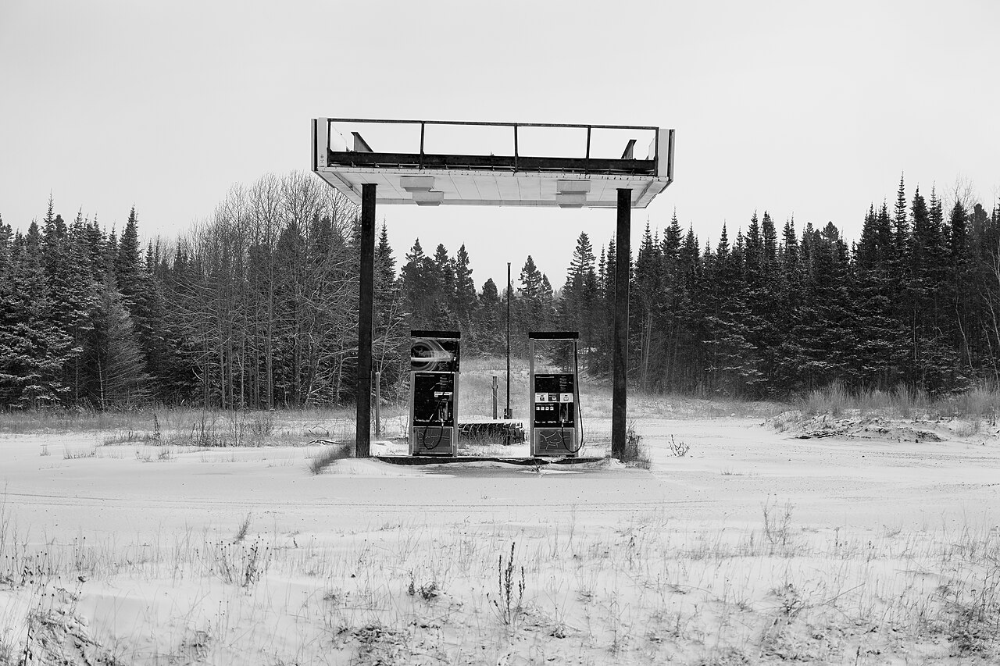

Can Gas Freeze? Winter Fuel Myths, Answered
Your gasoline won't freeze this winter. The water hiding in your tank will — and that's the real problem.

Photo: Janusz Sobolewski, CC BY 2.0, via Wikimedia Commons

Every cold snap brings the same question: can the gas in my tank freeze? The short answer is no — not in any winter weather you'll ever drive in. But the question points at a real problem, just not the one people think. The thing that freezes in your fuel system isn't the gasoline. It's water. And water gets into every fuel tank, in every car, all winter long.
Why it's wrong
Gasoline freezes at temperatures far below anything a winter road will ever reach — colder than the coldest day on record in most of Canada. So the gas itself is never the problem. The problem is condensation. Your fuel tank breathes: as temperatures swing, moist air moves in and out, and water condenses on the inside walls of the tank. That water sinks to the bottom, and in cold weather it can freeze in the fuel lines or the fuel filter — which blocks fuel flow and stalls the engine, or stops it starting at all. The other myth is that premium gas prevents freezing. It doesn't. Octane rating has nothing to do with freeze protection. And old advice about adding alcohol to the tank is outdated for modern cars — today's gasoline already contains ethanol, which absorbs small amounts of water.
The right way
- Keep the tank above half all winter. This is the single best fuel habit for winter. A fuller tank has less air inside, which means less moisture to condense — and more range if you get stuck somewhere.
- Fill up before a cold snap, not during it. A full tank going into a -25°C night is cheap insurance against a frozen fuel line in the morning.
- Use gas-line antifreeze if your car is older or sits a lot. A bottle of isopropyl-based gas-line antifreeze absorbs water in the tank. It's cheap and available at any parts store. Modern cars with ethanol-blended fuel usually don't need it, but it doesn't hurt.
- Don't let the car sit with a near-empty tank. A car parked for weeks with a quarter tank is a condensation factory. Fill it before you park it.
- If the car stalls or won't start after a cold night, suspect a frozen line. Moving the car somewhere warmer — a heated garage, even a sunny spot — can thaw it. If it keeps happening, have the fuel filter checked.
- Buy fuel from busy stations. High-turnover stations have fresher fuel and less water sitting in their underground tanks.
The rundown
Gasoline doesn't freeze. Water does, and it gets into your tank through condensation. Keep the tank above half, fill up before cold snaps, and don't park for weeks on near-empty. The fuel system is one of the simplest things to protect in winter — it just takes a fuller tank.
← Back to the full winter checklist